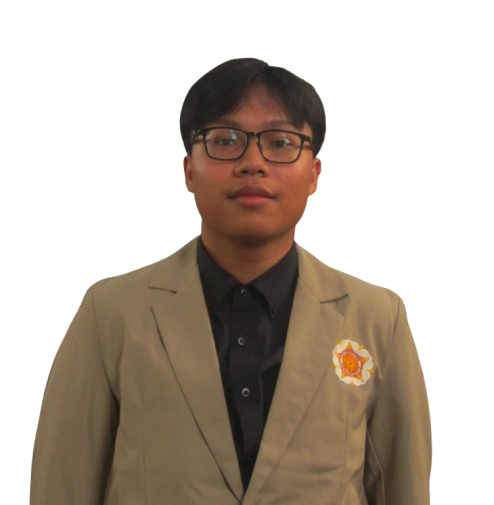

2026 — sekarang
Universitas Gadjah Mada
Sarjana Terapan Teknologi Rekayasa Elektro (D4)
HALO, SELAMAT DATANG!
Mahasiswa Elektro yang sedang belajar dan mencoba belajar hal-hal baru.

KENALAN DULU
Hai, nama saya Bessy, mahasiswa Teknologi Rekayasa Elektro di Universitas Gadjah Mada angkatan 2026 yang berasal dari Bengkulu.
Saya tertarik belajar lebih lanjut tentang sistem kelistrikan teknologi kendaraan listrik atau electric vehicle (EV), serta energi terbarukan. Saat ini aku masih membangun dasar pengetahuan dan keterampilan di bidang elektro, termasuk belajar pemrograman dasar.
Selain kuliah, saya senang belajar hal-hal yang berkaitan dengan seni. Mulai dari bermain musik, fotografi dan cinematografi.
Bengkulu, Indonesia
D4 Teknologi Rekayasa Elektro
Universitas Gadjah Mada
2026 - 2030
Sistem kelistrikan, teknologi EV, dan energi terbarukan
LATAR BELAKANG
Sarjana Terapan Teknologi Rekayasa Elektro (D4)
MIPA : Matematika TL
YANG SEDANG DI KEMBANGKAN
Memahami dasar pemrograman dan sedang berlatih menulis program sederhana.
Sedang dipelajariMengenal dasar pengukuran besaran listrik melalui pembelajaran dan praktikum.
DasarBerusaha menyelesaikan tugas dengan sungguh-sungguh, jujur, dan dapat dipercaya.
Terus dikembangkanSiap belajar bersama, mendengarkan masukan, dan berkontribusi dalam kelompok.
Terus dikembangkanPROSES BELAJAR
PEMROGRAMAN
Berlatih memahami variabel, input-output, percabangan, perulangan, dan fungsi untuk menyelesaikan masalah sederhana.
Sedang dipelajariKELISTRIKAN
Mempelajari penggunaan alat ukur dan memahami hasil pengukuran sebagai bekal untuk praktikum elektro berikutnya.
Pembelajaran dasarMINAT TEKNOLOGI
Topik yang ingin kupelajari lebih lanjut untuk memahami perkembangan teknologi energi dan penerapannya.
Rencana belajarTERHUBUNG
Kalau ingin berdiskusi, berbagi informasi, atau sekadar berkenalan, kamu bisa menghubungiku melalui kontak berikut.